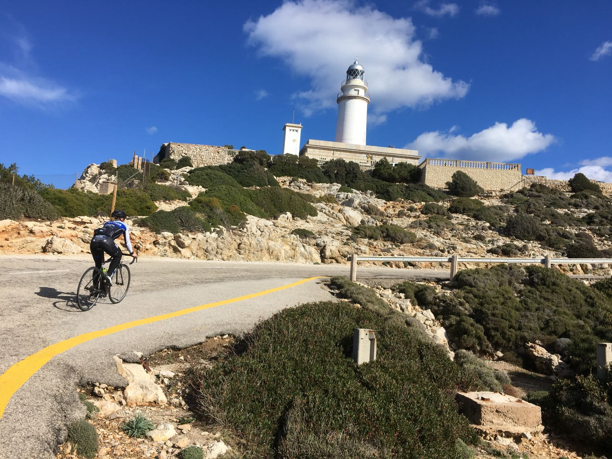

Lidt om mig
Marcher Arts
Hej! Mit navn er Johanne Marcher, og jeg elsker at være kreativ! Jeg kan godt lide at udfordre mig selv, og det er også derfor jeg har gang I så mange forskellige kreative projekter, med mange forskellige stilarter.
Af programmer bruger jeg:
- Adobe Photoshop
- Adobe Illustrator
- Adobe After Effects
- Adobe Audition
- Adobe Premier Pro
- Adobe Xd
- MediBang Paint
- FlipaClip
Men er altid åben for at lære nyt. Jeg er typisk hurtig til at fange et nyt program.
Ud over at være kreativ, bruger jeg min fritid på at være aktiv, med især cykling og brasiliansk jiu jitsu. Så skal jeg have frisket hjernen op efter en masse arbejde, så hjælper sporten mig.
Har du nogen spørgsmål, så tøv ikke med at tage kontakt! Du kan gå direkte til kontaktsiden her:
Kontakt her! 